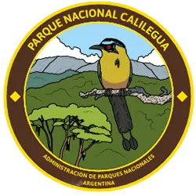
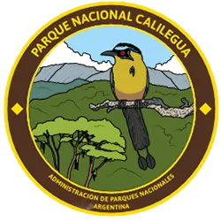

NOSOTROS
destaca por su belleza natural y su rica biodiversidad. Mis paisajes incluyen montañas, selvas y ríos, y albergo especies únicas, tanto de flora como de fauna. Aquí puedes encontrar desde tucanes y monos hasta una variedad de plantas autóctonas.Además de ser un refugio para la vida silvestre, ofrezco diversas actividades para los visitantes, como senderismo y observación de aves. Mi clima varía con la altitud, lo que crea distintos ecosistemas a lo largo de mis terrenos. Si buscas un lugar para conectar con la naturaleza

NUESTROS ANIMALES
alberga una rica biodiversidad, destacándose por su fauna emblemática. Entre sus habitantes se encuentran el yaguareté, un majestuoso felino que simboliza la salud del ecosistema, y los divertidos monos cariblancos, que suelen verse en grupos en los árboles. Las aves, como los coloridos tucanes, añaden vida a la selva, mientras que los ciervos de los pantanos y diversas especies de serpientes y lagartos contribuyen al equilibrio del hábitat. La abundancia de mariposas y otros insectos resalta la riqueza natural del parque, convirtiéndolo en un refugio vital para la fauna autóctona.
POR QUE LO HACEMMOS
son parte esencial del equilibrio ecológico y la salud de los ecosistemas. Cada especie desempeña un papel único en su hábitat, desde la polinización de plantas hasta el control de poblaciones de otras especies. Además, proteger a los animales contribuye a la conservación de la biodiversidad, lo que es fundamental para el bienestar del planeta y de las futuras generaciones.
Asimismo, al preservar la fauna, fomentamos el ecoturismo y la educación ambiental, creando conciencia sobre la importancia de la conservación. En resumen, cuidar de los animales es vital para mantener la riqueza natural y cultural que ofrece el parque.